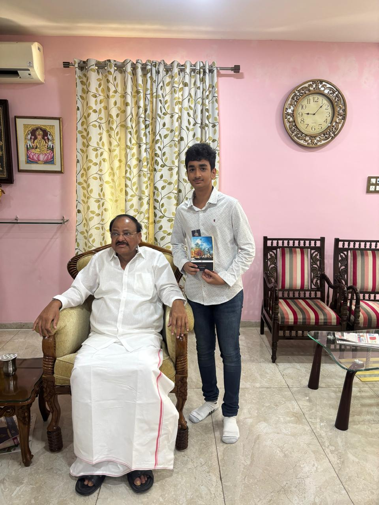

Build systems that interpret and respond.
Applied machine learning and computer vision across gesture-based interaction, object detection, and interactive prototypes.
Explore selected buildsSTUDENT RESEARCHER · AI DEVELOPER · BUILDER
Research-led AI. Quantitative thinking. Technology built for use.
I work across AI, data science, and quantitative research, building systems for real problems in accessibility, computer vision, and financial analysis.
START WITH THE WORK
A clear route through the projects, papers, and proof.
THE THROUGH-LINE
The portfolio connects three strands of work, each with a practical outcome and a trail of evidence.
Applied machine learning and computer vision across gesture-based interaction, object detection, and interactive prototypes.
Explore selected buildsResearch in adversarial financial stress scenarios and reinforcement-learning-based execution, with methods and evaluation made visible.
Read the researchAccessibility-focused software and sustained community learning, including SignSethu and the HEAL quantitative-literacy programme.
Explore community impactWORK
A focused selection of projects first, followed by the wider engineering archive.
Led a three-person team to the YIP 2023 final round and finished 4th, building a smart-village systems concept spanning AI, sensors, Raspberry Pi, Arduino, and real-world community utility.
Built and deployed SignSethu, an accessibility-focused Indian Sign Language system using MediaPipe and TensorFlow Lite. Trained on 500 self-collected samples, the app runs fully offline and is publicly available on Google Play under developer account AVIRINENI JAIDEV CHOWDARY.
TECHNICAL ARCHIVE
Independent builds in computer vision, tracking, object detection, and interactive systems.
Computer-vision experimentation around tracking, interaction, and responsive gameplay.
Programs and service work shaped by practical impact and sustained engagement.
RESEARCH
Two papers spanning generative adversarial stress testing and reinforcement-learning-based trade execution.
PROOF AT A GLANCE
Selected programmes, recognitions, and measurable outcomes, with the underlying documents linked below.
IMPACT
Community learning, student leadership, and accessible technology are part of the same story.
Built and sustained a quantitative-literacy program for 40+ rural students over 16 months, teaching percentages, simple and compound interest, data analysis, computer skills, and applied problem solving every weekend.
40+ students · 16 months · every weekendServed in escalating student leadership roles, bridging communication between students and school staff and supporting practical school operations and lab access.
House Captain → STEM Secretary → Head Boy SELECTED CEREMONY STILLS (32–35) ↗Built a sustained reading movement across apartments, clubs, and libraries, creating a visible reading culture and broad community reach.
2+ years · 15 newspaper outlets
THE JOURNEY
Selected milestones across innovation, education, accessible technology, industry experience, and applied research.
Led a three-person RuralConnect team combining AI, sensors, Raspberry Pi, and Arduino, finishing fourth nationally.
VIEW OFFICIAL CERTIFICATE ↗Built and sustained a weekend learning programme for more than 40 rural students, connecting numeracy, data, and practical computer skills.
VIEW RECOMMENDATION ↗Developed an Indian Sign Language-to-Telugu app using MediaPipe and TensorFlow Lite, trained on 500 self-collected samples for on-device use.
VIEW GOOGLE PLAY ↗Worked on applied machine learning at NUS and completed a 200-hour international internship programme with Cognivance Inc.
EXPLORE EVIDENCE ↗Published two research papers exploring adversarial financial stress scenarios and reinforcement-learning-based trade execution.
EXPLORE RESEARCH ↗BEYOND THE CORE
RECOMMENDATIONS
EVIDENCE
COMPLETE CERTIFICATE ARCHIVE
Every card below is tied to a real repository file; duplicated copies are represented once.
GITHUB
Real-time webcam detection with COCO-SSD, target-object matching, confidence labels, and speech feedback.
VIEW REPOSITORY ↗Gesture-controlled game using pose estimation to translate wrist movement into a live paddle controller.
VIEW REPOSITORY ↗React + TypeScript web application supporting the reading initiative through dedicated sections, routes, and gallery experiences.
VIEW REPOSITORY ↗Browser computer-vision prototype for continuous visual processing, detection labels, confidence scores, and live feedback.
VIEW REPOSITORY ↗Sample-only repositories are intentionally excluded from this archive to keep the portfolio focused.
MEDIA ARCHIVE
Open a group directly from the CV. Each image opens in a focused viewer with previous/next navigation for that group.
01–19, 21–22 · YIP / IIT KHARAGPUR
23–25 · HEAL PARADISE
A small permitted selection from the first class; classroom photography is otherwise restricted.
20, 26–30 · THE PAGE CLUB
32–33, 35 · HEAD BOY
ABOUT
I work at the intersection of AI, data science, quantitative research, engineering, and accessibility. My projects are built to solve real problems, not simply to demonstrate technical flair.
My strongest work sits across computer vision, machine learning, applied research, and community-building programs where learning must be visible, useful, and documented.
ACADEMIC RIGOR
The school did not offer Economics, so I asked to take the course and the school declined. I was simultaneously completing the CBSE curriculum and preparing for JEE, so I chose AP Microeconomics as a deliberate additional economics-rigor choice rather than taking a large AP course load.
QUICK QUESTIONS
A few useful notes on the work, the numbers, and how to verify them.
Start with the selected builds, then explore the research papers and interactive case studies. The evidence and media sections provide supporting documents and activity context.
Yes. The portfolio links to certificates, recommendation letters, published papers, public repositories, and selected activity photographs. Each evidence item is presented with its own source link.
The NUS project used the IBM Telco Customer Churn dataset. The tuned XGBoost model reached a 0.846 ROC-AUC. Separately, K-means identified a 1,525-customer high-risk segment; that segment is not presented as the number flagged by XGBoost.
The reinforcement-learning paper compares the approach with TWAP, VWAP, and Almgren–Chriss in simulated limit-order-book environments. The portfolio does not present those experiments as live-trading results.
SignSethu is an offline Indian Sign Language-to-Telugu app built with MediaPipe and TensorFlow Lite. Its model was trained using 500 self-collected samples and is linked from the project section.
CONTACT
Explore the projects, papers, and supporting evidence throughout this portfolio. For public code and project discussions, start with GitHub.